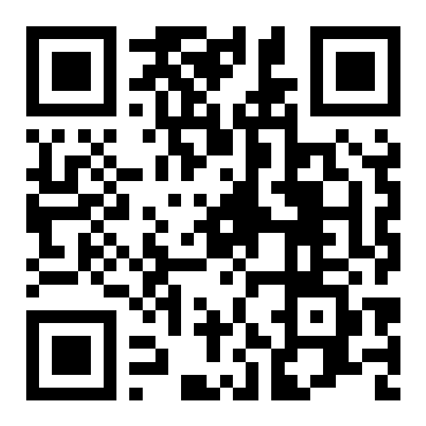
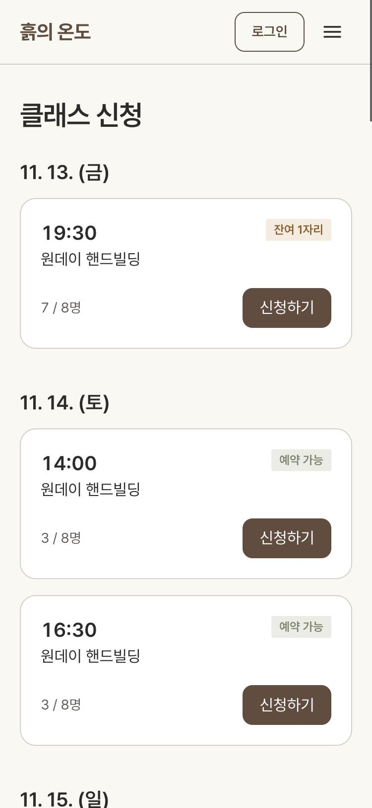
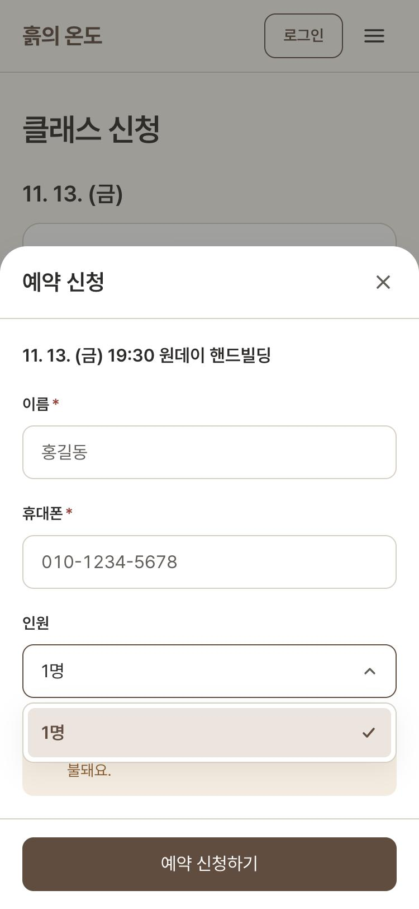
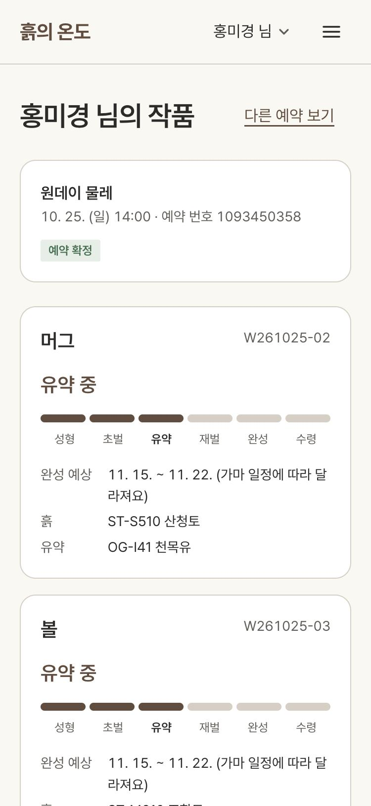
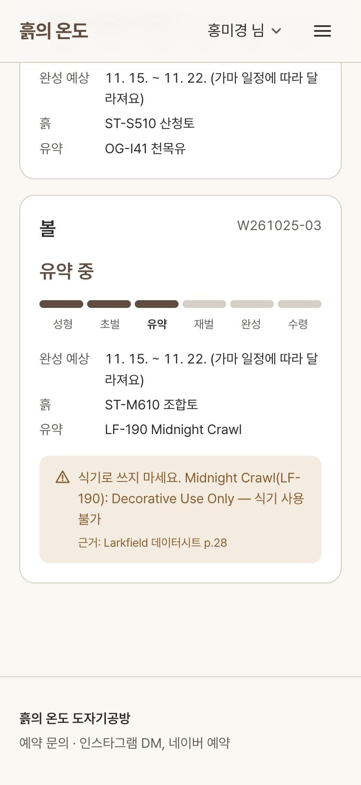
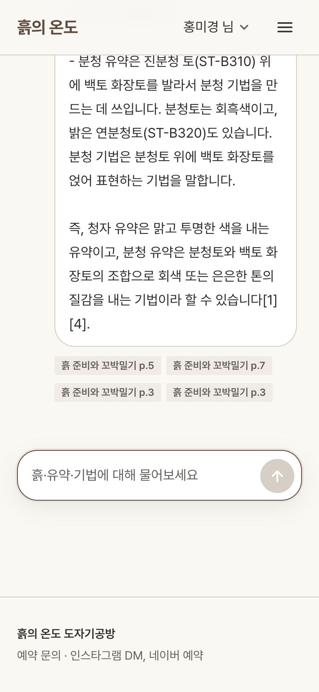
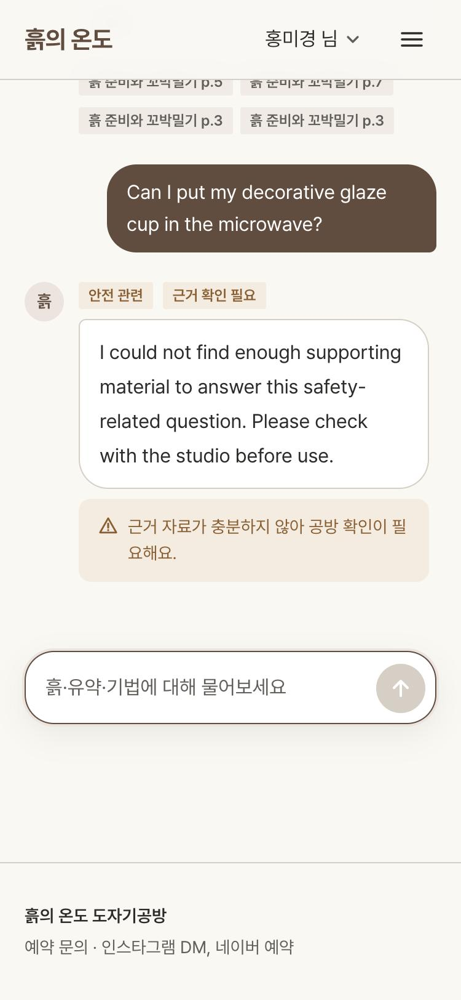
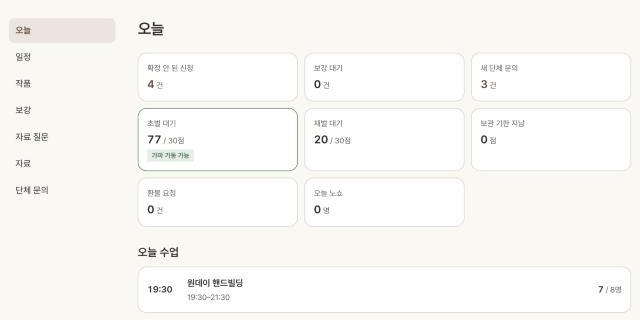
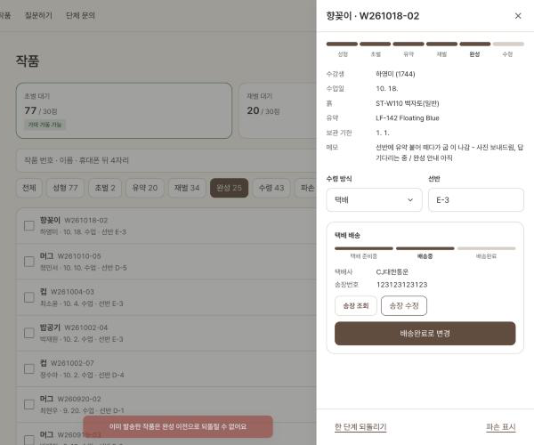

7회차 해커톤 · 고객사 11 흙과불 도자기공방
흙의 온도
예약 · 작품 · 배송 · 보강 · 단체 문의를 한곳에서
정주애 · 2026.11.13
← → 이동 · T 목차 · F 전체 화면
웹 (수강생 · 직원)
heuk-frontend.vercel.app
Next.js · Vercel / NestJS · PostgreSQL · Render

발표 자료
jexists.github.io/studio-booking/docs/presentation
GitHub Pages
CONTENTS
목차
01 · 요구사항 분석
고객이 한 말
| 누가 | 인터뷰 원문 | 읽어 낸 문제 |
|---|---|---|
| 류 강사 | "DM으로 예약받으면 놓치는 게 있어요. 확정했는지 안 했는지 헷갈려요." | 예약 상태 기록 부재 |
| 대표 | "작품 관리가 제일 큰일이에요. … 한 달 걸려요." | 작품 단계 추적 부재 |
| 류 강사 | "수강생분들이 자기 작품이 지금 어디까지 왔는지 계속 물어보세요." | 반복 문의 → 셀프 조회 |
| 대표 | "택배로 보낼 때 깨지면 다시 만들어 드려야 해요." | 배송 상태 관리 필요 |
| 류 강사 | "한 번 빠지면 다른 날 보강하고 싶어 하세요." | 보강 신청 창구 부재 |
01 · 요구사항 분석
진짜 문제와 기본 요구사항
DM 하나에 예약 · 작품 문의 · 자료 질문이 섞이고,
기록은 DM · 엑셀 · 자료에 흩어짐
구현기본 요구 6개
1정원 지키는 예약2작품 단계 · 셀프 조회3정규반 보강4자료 근거 답변 · 근거 위치5자료 업로드 즉시 반영6단체 문의 · 견적
추가운영 필요
+택배 배송 관리+취소 · 환불 요청+노쇼 기록
02 · 기획 · 명세
오늘 만든 것과 미룬 것
오늘 규칙이 정해진 일
예약 신청 · 확정 · 취소 환불
정원 일반 8 / 물레 6, 3일 전 전액 · 이후 50%
작품 6단계 · 수강생 조회
성형 → 초벌 → 유약 → 재벌 → 완성 → 수령
택배 배송
송장 입력 · 배송 조회 링크
보강 · 단체 문의 · 직원 권한
같은 주 · 다른 반, 견적은 대표만
미룸 고객 기준 미정
파손 시 재제작 · 환불 안내
보상 기준 없음 → 문안이 약속처럼 읽힐 위험
후기 · 준비물 목록
항목 · 수량 기준 미정
결제 · 네이버 · 인스타 연동
외부 계약 필요, 1일 범위 초과
작품 사진
"사진을 매번 챙기는 일이 부담" (권 강사)
02 · 기획 · 명세
사용자와 화면
수강생휴대폰 · 로그인 없음
/classes일정 · 신청/me예약 · 작품 · 배송 · 환불 요청/group단체 문의/ask자료 질문
강사직원 로그인
/staff오늘classes일정 · 명단 · 노쇼works작품 · 택배makeups보강 승인documents자료
대표강사 권한 + α
inquiries견적 금액 · 상태members직원 초대 · 비활성
02 · 기획 · 명세
시스템 구조
프런트
Next.js 16 · Vercel
수강생 휴대폰 화면
직원 화면 /staff
직원 화면 /staff
백엔드
NestJS · Render
직원 토큰 인증대표 전용 권한정원 잠금 확인환불 비율 계산단계 · 배송 검증보강 후보 계산
DB
PostgreSQL · Render
Prisma 스키마 hackathon
마이그레이션 3개
마이그레이션 3개
REST /api
Prisma
02 · 기획 · 명세
데이터 관계
03 · 제작
규칙과 지키는 곳
| 규칙 (인터뷰 근거) | 지키는 방법 |
|---|---|
| 정원 일반 8 · 물레 6 | 수업 행 잠금(FOR UPDATE) 후 인원 재계산 → 초과 거절 |
| 원데이 취소 3일 전 전액 · 이후 50% | 수업일 − 요청일로 비율 계산, 요청 시점 비율 고정 |
| 작품 단계 한 칸씩 | 건너뛰기 거절 · 되돌리기 한 칸 · 변경 기록 저장 |
| 완성일은 범위로 안내 | 수업일 + 21~28일 계산값 |
| 보강: 같은 주 · 다른 반 · 빈자리 | 후보 계산 + 강사 승인 시 정원 재확인 |
| 안전 질문은 근거 확인 필수 | 근거 없으면 AI 답 대신 고정 문구 · 영어 질문은 영어 |
| 견적 금액 · 상태는 대표만 | 백엔드 역할 검사 (화면 숨김은 보조) |
03 · 제작
택배 배송 관리
"완성되면 방문 수령이나 택배로 전달" — 깨지면 재제작이라 배송 단계 기록 필수
DONE
완성
수령 방식 선택
PREPARING
택배 준비중
택배 선택 시 자동
SHIPPING
배송중
택배사 · 송장번호 입력
DELIVERED
배송완료
수령 단계로 이동
- 완성 전 발송 거절 · 송장번호 숫자 8~20자리 확인
- 발송 뒤 수령 방식 변경 거절
- 수강생 화면에 택배사 배송 조회 링크
03 · 제작
취소 · 환불 요청과 노쇼
환불 요청 수강생 → 직원 승인
내 예약 화면의 요청 버튼
원데이 · 수업 시작 전 · 대기 중 요청 없음
예상 환불 비율 미리 표시
3일 전까지 100% · 이후 50%, 요청 시점 고정
직원 대시보드 · 명단 배지
승인 → 취소 + 환불 비율 기록 / 반려 → 재요청 가능
노쇼 · 가정 고객 기준 확인 필요
수업 시작 뒤에만 표시
시작 전 표시 거절 · 되돌리기 가능
환불 대상 아님
노쇼 상태에서 환불 요청 · 직원 취소 거절
오늘 노쇼 수 대시보드 표시
정원 계산에서 제외
04 · 주요 개발 화면
예약 정원 지키기

일정별 남은 자리 표시

인원은 남은 자리까지만
만든 것
남은 자리 표시 · 인원 선택 제한
잔여 1자리 수업은 1명만 선택 가능
막은 오류
화면 우회 · 동시 신청으로 정원 초과
서버에서 수업 행 잠금 후 인원 재계산 → 초과 시 409, 동시 8건 신청에도 정원만 통과
해결한 요구
기본 1 · 일반 8 / 물레 6 정원
신청은 한곳에서, 확정 여부 기록
04 · 주요 개발 화면
내 작품 셀프 조회

6단계 진행 · 완성 예상 범위

장식용 유약 식기 경고 · 근거
만든 것
예약번호 + 휴대폰 뒤 4자리 조회
성형 → 수령 6단계, 완성일은 하루가 아닌 범위
막은 오류
남의 작품 조회 · 장식용 작품 식기 사용
5번 틀리면 10분 잠금, 장식용 유약은 식기 사용 불가 + 데이터시트 쪽수
해결한 요구
기본 2 · 작품 상태 반복 문의
"어디까지 왔어요?" DM 대신 직접 확인
04 · 주요 개발 화면
자료 근거 답변 (AI)

답변 + 근거 위치(자료 · 쪽)

근거 없는 안전 질문 · 영어
만든 것
공급처 자료 · 수업 노트 근거 답변
답 아래 근거 자료 이름과 쪽 표시, 자료 올리면 바로 검색 반영
막은 오류
근거 없는 안전 답변 단정
식기 · 전자레인지 질문은 근거 부족 시 AI 답 대신 "공방 확인" 고정 문구
해결한 요구
기본 4 · 5 · 영어 질문
영어 질문에는 영어로, 질문 기록은 직원 화면에서 확인
04 · 주요 개발 화면
직원 운영 화면

오늘 — 미확정 신청 · 보강 대기 · 환불 요청 · 노쇼 · 가마 대기 n/30

택배 송장 · 배송 상태 · 되돌리기 거절 알림
만든 것
흩어진 기록을 한 화면에
예약 · 보강 · 문의 · 작품 · 가마 대기를 오늘 화면에 모음
막은 오류
발송 작품 상태 꼬임
발송한 작품 되돌리기 거절, 배송완료 전 수령 거절
해결한 요구
택배 파손 대비 · 운영 기록
택배사 · 송장 · 배송 단계 기록, 가마 30점 기준 표시
흙의 온도를 불러오고 있어요
서버가 잠들어 있으면 첫 응답이 오래 걸릴 수 있어요
서버가 잠들어 있으면 첫 응답이 오래 걸릴 수 있어요
화면 안을 누르면 키보드 이동이 멈춰요 · 위 버튼으로 이동해요
직원 화면을 불러오고 있어요
서버가 잠들어 있으면 첫 응답이 오래 걸릴 수 있어요
서버가 잠들어 있으면 첫 응답이 오래 걸릴 수 있어요
화면 안을 누르면 키보드 이동이 멈춰요 · 위 버튼으로 이동해요
04 · 테스트 · 검수
테스트 · 검수 결과
691차 확인 항목
4자료 질문 재시험 성공
581차 통과
61차 실패
0수정 후 남은 실패
| ID | 발견한 문제 | 처리 · 재시험 |
|---|---|---|
| P-01 | 택배 작품이 발송 없이 수령 단계로 이동 | 배송완료 뒤에만 수령 → 400 확인 |
| P-03 | 수강생 조회 반복 시도 제한 없음 | 5번 틀리면 10분 잠금 → 429 확인 |
| P-02 | 배송중 작품의 이전 단계 되돌리기 | 발송 작품 되돌리기 거절 → 400 확인 |
| P-04 | 지난 수업 직원 대리 등록 | 시작한 수업 등록 거절 → 400 확인 |
| P-05 | 수강생 인증 방식 명세 불일치 | 명세 문서 수정 |
| P-06 | 단체 문의 지난 희망일 허용 | 지난 날짜 거절 → 400 확인 |
THANK YOU